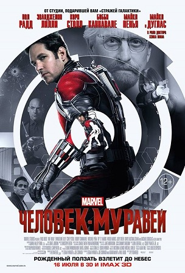
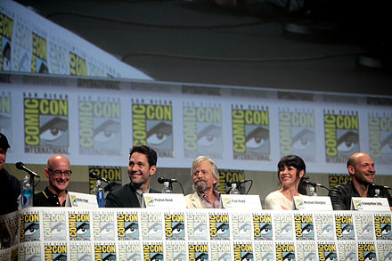

«Человек-муравей» (англ. Ant-Man) — американский супергеройский фильм, основанный на персонажах одноимённой серии комиксов Marvel: Скотте Лэнге и Хэнке Пиме. Созданием картины занималась компания Marvel Studios, а распространением — Walt Disney Studios Motion Pictures. Это двенадцатый фильм Кинематографической вселенной Marvel, завершающий вторую фазу. Пейтон Рид выступил режиссёром. В главных ролях — Пол Радд, Майкл Дуглас и Эванджелин Лилли. Закрытая премьера фильма в США состоялась 29 июня 2015 года[4], в Европе — 8 июля[5]. В широкий прокат в США фильм вышел 17 июля 2015 года[6], в России — 16 июля. Фильм стал последним во второй фазе киновселенной Marvel. В финале, вторую сцену после титров, взятую напрямую из фильма «Первый мститель: Противостояние», снимали режиссёры Энтони и Джо Руссо. В России фильм получил возрастной рейтинг 12+. В США детям до 13 лет рекомендуется смотреть фильм с родителями.
1989 год. Учёный Хэнк Пим был когда-то агентом Щ. И. Т., работал с Говардом Старком и Пегги Картер и разработал костюм Человека-муравья во время работы в организации. Пим отказался позволить Щ. И. Т. наладить массовое производство своих костюмов, в результате чего у него возникло трение с коллегами, и он подал в отставку. Наши дни. Пожилой Хэнк навещает свою компанию «PymTech», которую прибрал к рукам бывший ученик Пима, Даррен Кросс, который представляет новый проект под названием «Жёлтый Шершень». Пим понимает, что проект может привести к катастрофе огромных масштабов. В это время Скотта Лэнга, инженера, после трёх лет заключения за кражу со взломом, выпускают из тюрьмы. Его увольняют с работы, а бывшая жена Мэгги и её жених Пакстон не разрешают ему видеться с дочерью Кэсси. Его друзья Луис, Дэйв и Курт дают ему наводку на дом с неким сейфом. С трудом, но Скотт пробирается туда, но вместо денег находит странный костюм. Скотт все же забирает костюм себе и выясняет, что тот даёт носителю способность уменьшаться. После неудачного тестирования костюма Скотт пытается вернуть костюм обратно, но его задерживает полиция, и он снова оказывается в тюрьме. Его навещает Хэнк, который говорит ему, что следил за ним, и даёт выбор: либо Скотт остаётся под заключением, либо он выходит и работает на Пима. Скотт возвращается в камеру, где муравьи приносят ему костюм. Скотт надевает его и с помощью летающего муравья Энтони сбегает из тюрьмы. Муравьи приводят его к дому Пима. Пим вводит его в курс дела, объясняя, что необходимо выкрасть прототип Жёлтого Шершня из корпорации Кросса. Скотт предлагает обратиться к Мстителям, но Хэнк замечает, что им важнее «города ронять с небес». Скотт проходит курс тренировок у Хэнка и его дочери Хоуп ван Дайн, которая под прикрытием работает на Кросса. Скотт учится уменьшаться и контролировать муравьёв, которые должны помочь ему в краже. Лэнг замечает, что у Хоуп с отцом весьма натянутые отношения, так как Хэнк отказывается объяснить причину гибели её матери Джанет. Позже Хэнк рассказывает настоящую причину: во время военной операции в 1987 году мать Хоуп отключила свой регулятор и сделалась меньше атома, чтобы обезвредить баллистическую ракету и спасти Америку. Ей это удалось, но вернуться в исходные размеры она не смогла. Хоуп понимает, что её отец невиновен в гибели матери и мирится с ним. Скотт прибывает на заброшенный объект Говарда Старка, чтобы выкрасть устройство, которое пригодится для кражи. Однако выясняется, что его переделали в штаб-квартиру Мстителей. Его замечает Сокол, после стычки с которым ценой больших усилий Скотту удаётся выкрасть прибор. После этого дом Пима посещает Даррен Кросс и после короткого разговора с Хэнком приглашает его на первое испытание Жёлтого Шершня. Скотт и Хоуп уверены, что это ловушка, однако Пим утверждает, что другого выбора у них нет. Хоуп узнаёт, что Даррен усилил охрану, и Скотт подключает к делу своих друзей. Вечером Хэнк, Скотт, Хоуп и друзья Лэнга приходят на демонстрацию проекта. После успешного завершения основной задачи Скотт уже готов выкрасть Жёлтого Шершня, однако Даррен, который захватил Хэнка в заложники, был готов к появлению супергероя и ловит его в специальной капсуле для Шершня. Выясняется, что Кросс собирается продать технологию организации «Гидра», которая сможет использовать Шершня для захвата мира. Пим пытается остановить Даррена, однако Кросс стреляет ему в плечо и чуть не убивает. Скотт вырывается из камеры и спешит за Кроссом, который сбежал с Шершнем. Хоуп и раненый Пим покидают здание на увеличенном танке, который Пим носил как брелок. Друзья Скотта тоже сбегают, а сам Скотт преследует Даррена на Энтони и с целой армией летающих муравьёв. Даррен замечает погоню и убивает Энтони. Скотт с помощью заложенных ранее зарядов уничтожает здание «PymTech», а Кросс надевает костюм Жёлтого Шершня. Скотт и Кросс сходятся в битве, и Лэнг таки нейтрализует противника, отбив его ракеткой для настольного тенниса в ловушку для насекомых, но его тут же арестовывает Пакстон, которого вызвали жители дома, куда попали дуэлянты. Однако Даррен приходит в себя и направляется в дом Скотта. Скотту всё-таки удаётся надеть шлем, который с него сняли, и он спешит к дочке. Там Даррен готовится убить девочку, однако появляются Пакстон и Скотт. Пакстон спасает Кэсси, а Человек-муравей сталкивается с Шершнем, но не может победить. Когда Кросс готовится убить Пакстона и Кэсси, Скотт, несмотря на предостережение Пима, отключает регулятор и уменьшается до размеров атома, чтобы пробраться внутрь костюма Кросса, и отключает его. Кросс ещё больше уменьшается и погибает. Лэнг оказывается в квантовом пространстве, но, благодаря увеличивающим дискам, ранее полученным от Пима, он выбирается обратно. Хэнк, оправляясь от пули, спрашивает Скотта о межатомном пространстве, однако тот ничего не помнит. Пим подозревает, что его жена всё ещё жива, поскольку Скотт смог выбраться из квантового мира. Также выясняется, что Скотт и Хоуп, возможно, начали отношения. Скотту теперь разрешено видеться с Кэсси, и Пакстон относится к нему как к другу. Луис в своей особой манере сообщает Скотту, что Сэм Уилсон ищет его. Первая сцена после титров намекает на сиквел фильма «Человек-муравей и Оса»: Хэнк показывает Хоуп экспериментальный, ещё неиспытанный, костюм Осы, созданный для её матери и предлагает Хоуп принять его. Вторая сцена после титров взята напрямую из фильма «Первый мститель: Противостояние»: Стив Роджерс и Сэм находят Зимнего Солдата, упоминая, что на помощь Тони им рассчитывать не придётся. Сокол говорит, что знает кое-кого, возможно, намекая на Скотта.
 Разработка фильма о Человеке-муравье началась ещё в конце 1980-х годов, когда один из создателей персонажа, Стэн Ли, предложил идею экранизации New World Entertainment, материнской компании Marvel Comics на тот момент. Однако Walt Disney Pictures разрабатывала фильм, основанный на похожей идее, «Дорогая, я уменьшил детей», и хотя «Человек-муравей» вошёл в процесс разработки, дальше этого он не продвинулся[11]. Разработка же «Человека-муравья» 2015 года началась в апреле 2006 года с назначения режиссёром проекта Эдгара Райта по его и Джо Корниша сценарию. В апреле 2011 года Райт и Корниш закончили написание трёх черновых сценариев, и в июле 2012 года Райт приступил к съёмкам тестовых сцен будущей ленты. Пре-продакшн, который был приостановлен с целью завершения Райтом съёмок фильма «Армагеддец», начался только в октябре 2013 года. Кастинг начался в декабре 2013 года с утверждения Пола Радда на роль Лэнга. 23 мая 2014 года стало известно, что британский режиссёр и продюсер Эдгар Райт покинул своё режиссёрское кресло. Как было сказано в совместном заявлении компании «Марвел» и режиссёра, его увольнение произошло из-за творческих разногласий. Однако на студии уточнили, что уход Райта не повлияет на запланированный релиз «Человека-муравья» — фильм выйдет, как и предполагалось, 17 июля 2015 года. Уже в июне было объявлено, что новым режиссёром стал Пейтон Рид, а Адам Маккей был нанят дописывать сценарий. В августе 2014 года Рид рассказал, что в фильме появится дочь Скотта Лэнга[12], а также, что Гэбриел Феррари и Эндрю Баррер были наняты, чтобы сделать дополнительные изменения в сценарии[13].
16 февраля 2014 года стало известно, что Стивен Прайс напишет музыку к фильму[15]. Однако вскоре Прайс покинул проект после ухода из него Райта[16]. В итоге композитором фильма стал Кристоф Бек.
В марте 2014 года телесеть ABC выпустила программу под названием «Marvel Studios. Собирая Вселенную», которая содержала маленький отрывок из фильма «Человек-муравей»[17][18]. В июле 2014 года Рид, Радд, Дуглас, Лилли и Столл появились на панели Marvel Studios на «Комик-Коне-2014» в Сан-Диего, чтобы помочь разрекламировать фильм и продемонстрировать тестовые спецэффекты с участием Радда и Дугласа[19]. Первый трейлер блокбастера студия выложила вместе с премьерой сериала «Агент Картер» 7 января 2015 года[20], а второй трейлер появился 13 апреля[21]. Помимо этого, фильм рекламировался при помощи оригинальных билбордов — не традиционно огромных плакатов, а, наоборот, неприметных табличек, что является аллюзией на главную способность Человека-муравья.